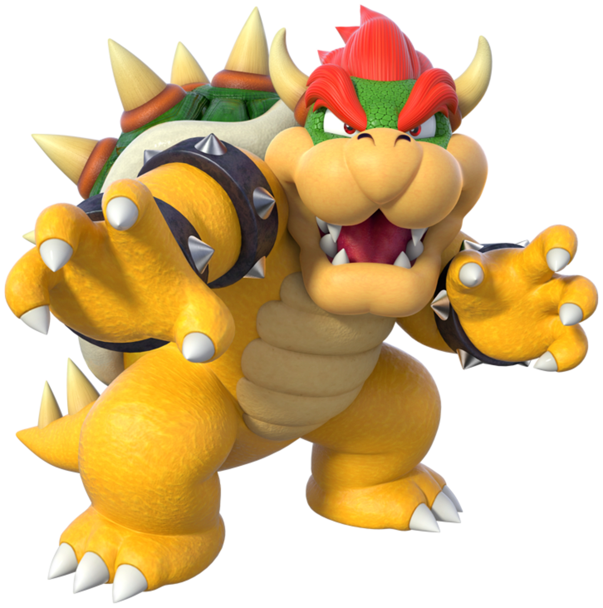
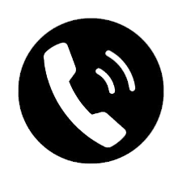
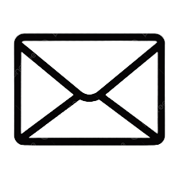

FOTO

Datos Personales
- 5 de febrero de 1989
-  +39 609 66 13 33
-
 Reino Koopa
Reino Koopa
-  bowser@letskill.com
Habilidades
- Aliento de fuego
- Martinete giratorio
- Fortaleza giratoria
- Bomba bowser
- Giga bowser
Idiomas
- Koopaliano
- Inglés
- Japonés
Experiencia
- Super Mario 64 (1997).
- Super Mario Sunshine (2002).
- New Super Mario Bros (2006).
- Super Mario Galaxy (2007).
- Super Mario Kart (2010).
- Super Mario Galaxy 2 (2010).
- Super Mario 3D Land (2011).
- New Super mario Bros 2 (2012).
- New Super Mario Bros U (2012).
- Super Mario 3D World (2013).
- Super Mario Maker (2015).
- Super Mario Run (2016).
- Super Mario Odyssey (2017).
- Super Mario Party (2018).
Referencias
| NOMBRE | RELACIÓN | CONTACTO |
|---|---|---|
| Peach | "Pareja" | princesspeach@rescueme.com |
| Mario | Enemigo | mariobros@fontaneros.com |
| Wario | Amigo | wario@chapuzas.com |
| Waluigi | Amigo | waluigi@chapuzas.com |
Más sobre mí
Si quieren saber más sobre mí, visiten mi página.